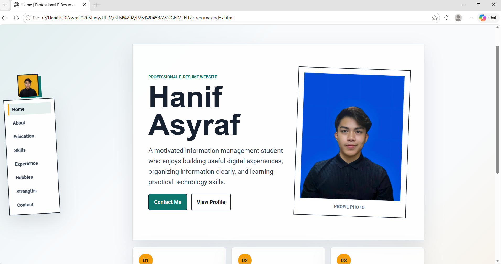
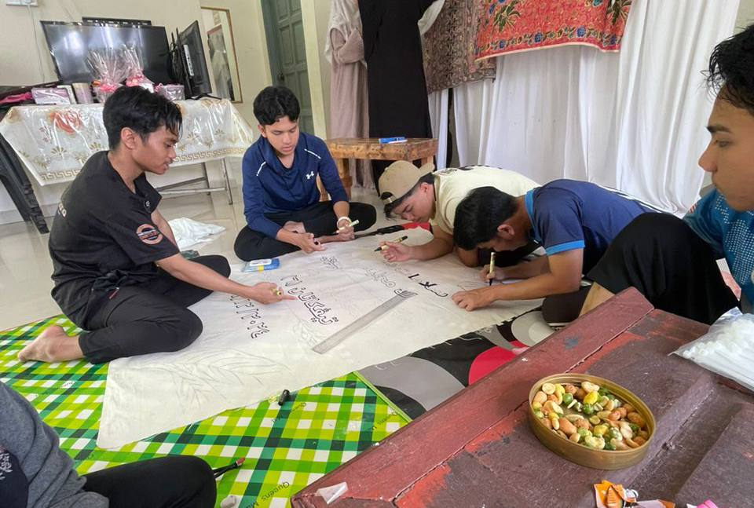
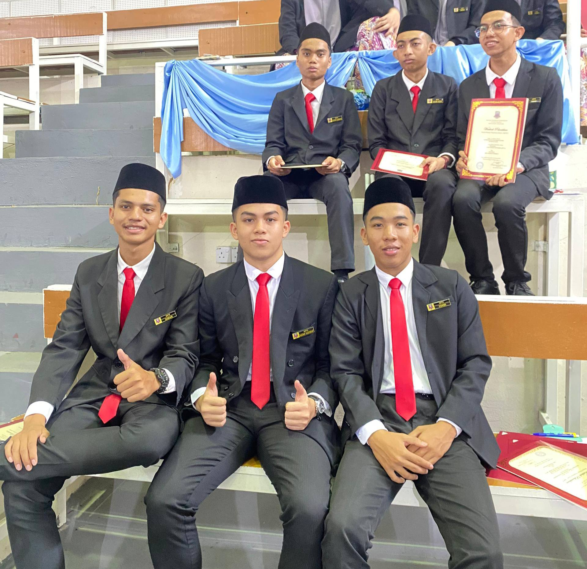
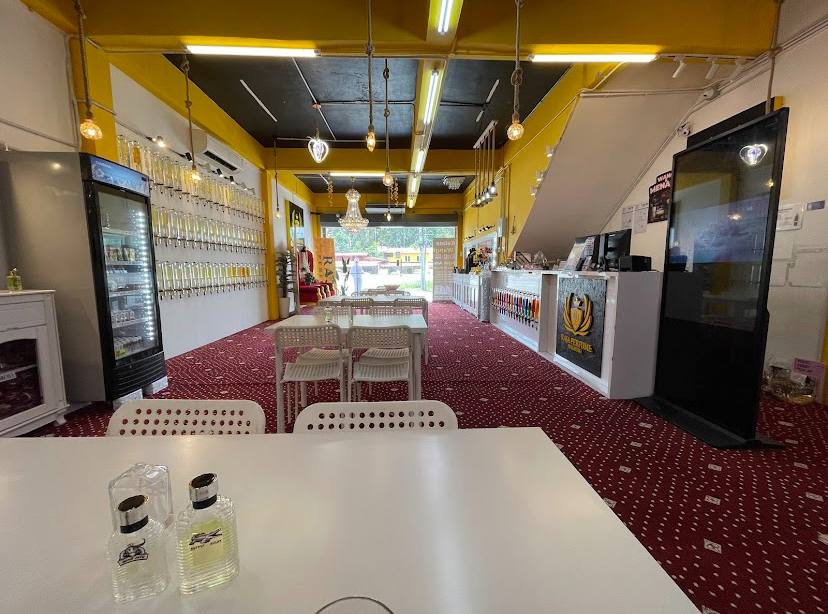

Project
Web Design Assignment
Planned and developed a personal e-resume website using HTML5, CSS3, and JavaScript with attention to content structure and visual presentation.

INFORMATION MANAGEMENT STUDENT
Practical involvement
My experience includes academic projects, group work, event participation and part-time job that help me become more confident and employable.
Project
Planned and developed a personal e-resume website using HTML5, CSS3, and JavaScript with attention to content structure and visual presentation.

Teamwork
Collaborated with classmates to complete group tasks by sharing ideas and responsibilities. This experience improved my teamwork, communication, and cooperation skills.

Leadership
I am a former MPP STPM member in Sports and Recreation Management, with experience in leadership, teamwork, and organizing student activities.

I worked part-time at Raja Perfume as a freelance staff in a department store, where I handled product arrangement and stock filling. This experience improved my teamwork, communication, and responsibility, as I learned to work efficiently with others in a fast-paced retail environment.
